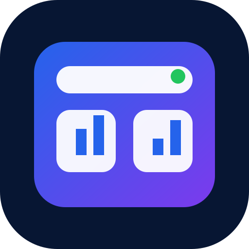

ЦУИМ Control Center
Установить приложение управления
После установки «ЦУИМ Управление» будет запускаться отдельным окном с рабочего стола или главного экрана, как обычная программа.
Подготовка к установке…
Проверяем возможности вашего браузера.
Windows / AndroidChrome или Edge покажет системное окно установки после нажатия кнопки.
iPhone / iPadОткройте в Safari: «Поделиться» → «На экран Домой» → «Добавить».
Уже установленоПриложение можно запускать с рабочего стола, панели задач или домашнего экрана.